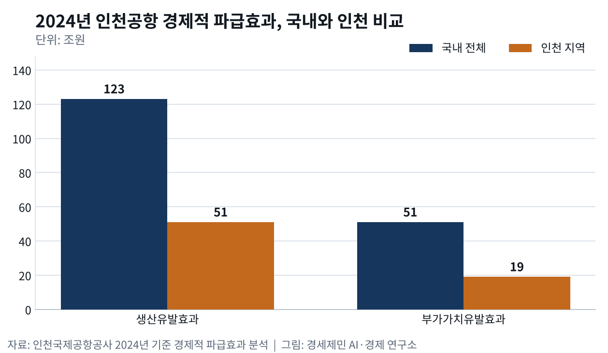
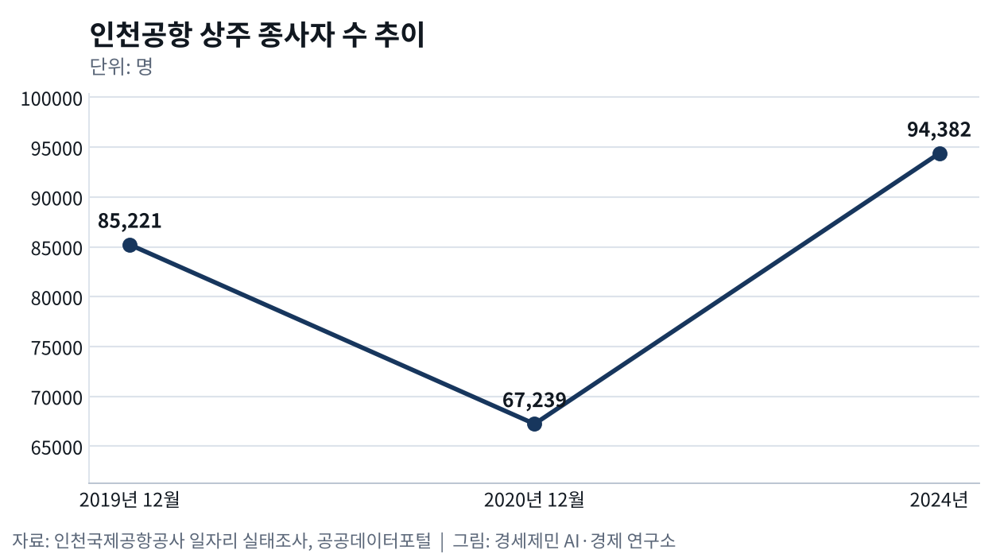
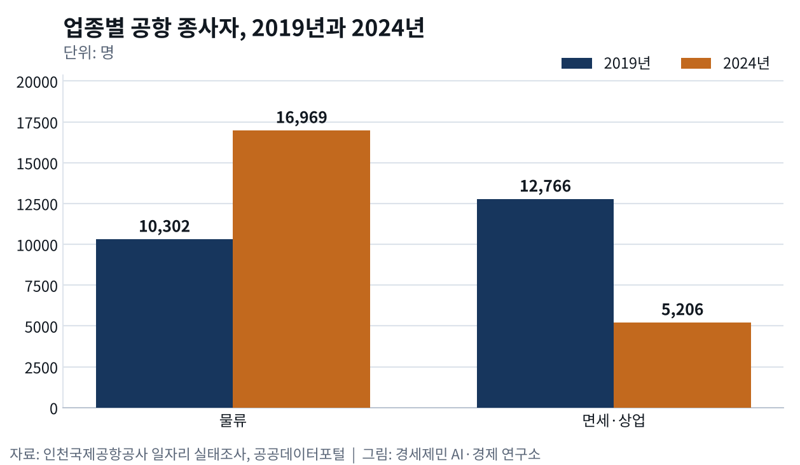

인천공항 일자리 66만개, 인천 몫은 21만개
- 인천 생산유발 51조원, 지역내총생산 대비 41.1%
- 종사자 2020년 1만7982명 이탈, 2024년 9만4382명
- 면세·상업 일자리 5206명, 2019년 대비 41%
인천국제공항공사가 5월 20일 발표한 2024년 기준 경제적 파급효과 분석을 보면 인천국제공항(ICN)이 만든 취업유발효과는 국내 전체 66만명이다. 이 가운데 인천 몫은 21만명이다. 인천 지역 생산유발효과는 51조원으로 인천 명목 지역내총생산(GRDP)의 41.1%다. 김범호 사장직무대행은 공항이 지역 상생발전을 이끄는 핵심 성장동력이라고 말했다.
국내 123조원, 국내총생산의 4.8%
국내 전체 생산유발효과는 123조원으로 전년보다 18% 늘었고 명목 국내총생산(GDP)의 4.8%다. 부가가치유발효과는 51조원으로 GDP의 2%다. 공사 공항산업기술연구원이 한국은행 2020 산업연관표로 산업연관분석과 지역 간 산업연관 모형을 짜 계산했다. 외국인 관광객 소비 같은 관광연계산업 효과까지 넣은 값이다.
공항 직접연계산업만 떼면 생산유발 67조원, 부가가치 26조원, 취업 23만명이다. 관광연계산업은 생산유발 39조원으로 전년보다 20% 늘었다. 부가가치유발은 18조원, 취업유발은 33만명이었다. 공사는 외국인 방한 수요 회복과 국내 소비 확대를 요인으로 들었다. 일자리 66만개 가운데 절반이 관광 쪽에서 나온 까닭이 여기에 있다.
인천 21만명, 지역내총생산의 41.1%
인천 지역 총생산유발효과는 51조원으로 전년보다 9% 늘었다. 부가가치유발 19조원은 인천 GRDP의 15.5%이고 취업유발은 21만명이다. 직접연계산업 기준으로는 인천 생산유발 48조원, 부가가치 18조원, 취업 17만명이다. 산업별로는 항공운송 서비스가 인천에서만 생산유발 31조원과 취업 7만7000명을 냈다.
직접연계 기준 국내 일자리 23만개 가운데 17만개, 74%가 인천 안에 있다. 관광연계까지 넣은 66만개 가운데 인천 몫은 21만개로 32%에 그친다. 공항을 돌리는 일자리는 인천에 몰리고 관광 쪽 일자리는 국내 곳곳으로 퍼지기 때문이다. 취업유발은 산업 연관을 따라 계산한 값이라 공항에서 실제로 일하는 상주직원 수와 따로 센다.
2020년 공항 일자리 1만7982개 사라져
인천대 후기산업사회연구소 학술지에 실린 인천공항경제권 사례 연구는 이 쏠림 뒤편을 기록했다. 공사 일자리 실태조사를 보면 공항 종사자는 2019년 12월 8만5221명에서 2020년 12월 6만7239명으로 줄었다. 1년 사이 1만7982명이 공항을 떠났다. 2020년 한 해 공항·항공 종사자 가운데 퇴직자만 1만2473명이었다.
남은 사람도 온전히 일하지 못했다. 같은 해 유급휴직자는 1만1352명으로 18.8%, 무급휴직자는 9686명으로 11.7%였다. 항공사 정상근무 비율은 30.1%, 지상조업사는 50.0%에 그쳤다. 업종 가운데 물류 종사자만 1만302명에서 1만716명으로 414명 늘었다. 여객이 끊긴 해에도 화물 쪽 일자리는 버텼다.
면세점·상업시설 종사자는 1만2766명에서 5309명으로 7457명 줄어 감소 폭이 가장 컸다. 연구는 면세점 인력 약 90%가 파견협력업체 소속이라는 구조를 짚었다. 정부는 기간산업안정기금을 받은 항공사에 90% 이상 고용 유지 의무를 걸었다. 협력업체 고용 유지는 권고에 그쳤다. 외주 인력이 먼저 공항을 떠난 까닭이 여기에 있다.
연구가 인용한 산업연구원 추정으로 코로나19 확산 뒤 인천 GRDP 성장률은 약 -7.3%였다. 국내 GDP 성장률 하락 폭 두 배쯤이다. 2019년 인천 경상 GRDP에서 운수업 비중은 10.9%로 시·도 17개 가운데 가장 높았다. 인천시와 중구청이 고용위기지역 지정을 신청했지만 고용노동부는 일곱 달쯤 결정을 미룬 끝에 거부했다.
같은 시기 항공산업 구조조정을 분석한 박상인 서울대 교수는 항공산업을 코로나19 충격이 크고 오래 갈 산업으로 꼽았다. 그는 산업별 노사정 협의로 사업을 재편하자고 제안했다. 지방자치단체 단위 적극적 고용정책도 함께 주문했다. 인천 사례 연구는 지역 공공기관 공동 대응이 실효를 거두지 못했고 피해 실태조사도 제대로 이뤄지지 않았다고 평가했다.
여객은 세계 1위, 면세·상업 일자리는 2019년의 41%
여객은 돌아왔다. 2025년 국제선 여객은 7355만4772명으로 개항 이후 가장 많았다. 올해 상반기에는 3839만명으로 국제공항협의회(ACI) 잠정 통계 세계 1위에 올랐다. 미국 대도시권을 분석한 연구에서 탑승객이 10% 늘면 서비스업 고용은 1%가량 늘었고 제조업 고용은 움직이지 않았다. 연구는 항공 서비스가 서비스업에 더 중요하다고 풀이했다.
공사가 공공데이터포털에 연 2024년 업종별 재직 인원을 더하면 상주직원은 9만4382명이다. 분류는 2019년 실태조사와 같은 일곱 업종이고 합계는 2019년 12월 8만5221명보다 많다. 물류는 1만6969명으로 2019년 1만302명보다 65% 늘었다. 그러나 상업은 5206명으로 2019년 면세점·상업시설 1만2766명의 41%다.
상업 가운데 면세는 3546명이고 2024년 한 해 상업 부문 채용은 984명이었다. 여객이 2019년 수준 가까이 돌아온 2024년에도 면세 매장 일자리는 코로나19 이전으로 돌아가지 않았다. 공사는 2025년 기준 파급효과 분석을 하반기에 낸다. 올해 2분기 여객 가운데 외국인 비율은 44.4%로 역대 가장 높았다. 관광 소비가 공항 상업 일자리로 되돌아오는지가 그 표에 담긴다.
※ 이 기사는 AI 프로그램 클로드를 활용해 작성했습니다.



참고문헌
기관 자료
- 인천국제공항공사, "인천국제공항공사_인천공항 상주직원 업종별 재직근로자 수 및 채용인원"(2024년 기준), 공공데이터포털, 2025년 7월 17일. https://www.data.go.kr/data/15144555/fileData.do
- 인천국제공항공사, 2025년 항공운송실적 발표 자료, 2026년 1월 25일.
- 인천국제공항공사, 2024년 기준 인천공항 경제적 파급효과 분석 발표 자료, 2026년 5월 20일.
- 인천국제공항공사, 2026년 상반기 국제선 여객 실적 발표 자료, 2026년 8월 13일.
연구 논문
- Brueckner, J. K., "Airline Traffic and Urban Economic Development", 『Urban Studies』 40(8), 2003년 7월, pp.1455-1469. https://doi.org/10.1080/0042098032000094388
- 박상인, "코로나19와 산업 구조조정: 항공산업과 자동차산업을 중심으로", 『노동연구』 41, 고려대학교 노동문제연구소, 2020년 12월, 41~71쪽. https://doi.org/10.56030/kuirle.2020.12.41.41
- 윤석진, "지역경제의 국지적 불황과 사회적 하향화: 인천공항경제권 사례 연구", 『후기산업사회연구』 1(1), 인천대학교 후기산업사회연구소, 2022년 2월, 129~154쪽. https://www.inu.ac.kr/bbs/pisri/1683/361454/download.do
언론기사
- 한상봉, "인천공항 '개항 이후 최대 항공운송 실적'", 서울신문, 2026년 1월 25일. https://www.seoul.co.kr/news/economy/2026/01/25/20260125500029
- 이종선, "인천공항 지역경제효과 51조원…인천 GRDP 중 41% 차지", 인천투데이, 2026년 5월 20일. https://www.incheontoday.com/news/articleView.html?idxno=319092
- 천상우, "인천공항 경제효과 123조원…'인천 GRDP 41% 수준'", 이투데이, 2026년 5월 20일. https://www.etoday.co.kr/news/view/2586244
- 강준완, "인천공항 새 역사…국제선 여객 '세계 1위'", 한국경제, 2026년 8월 13일. https://www.hankyung.com/article/2026081301661
※ 이 기사는 인공지능을 활용해 작성했습니다. 사실관계는 저자가 확인했습니다.
관련기사
- 허브는 밀도로 이긴다, 인천 환승 598만명
- 인천공항, 개항 25년 만에 국제선 세계 1위
- 인천 국제선 여객 세계 1위, 화물 허브는 푸둥에 밀렸다
- 수출은 하늘로 39%, 정비는 해외로 60%
저작권자 © AI경세제민 무단전재 및 재배포, AI학습 및 활용 금지